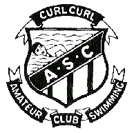

Curl Curl Amateur Swimming Club is a non-profit organisation which exists for the enjoyment of our members
and to promote the sport of competitive swimming.
The club formed in 1966 from the amalgamation of the previously separate Ladies and Mens clubs.
We have been operating continuously over the intervening years and currently have around 75 members ranging in
age from 4 to 82 years.
Our home pool is the South Curl Curl Rock Pool, on Sydney's northern beaches and we operate every Saturday
afternoon during a six month period over the summer starting in mid October and going through til the end of March.
Entries close at 1:30pm, races start at 2:00pm with events for all the family.
We have 15/25/33/50/100m freestyle, breaststroke, backstroke and butterfly handicap events as well as a 2x25m Brace Relay.
Distance events of 200m freestyle and medley are run on alternate Saturdays.
All standards of swimmers are catered for, from those just learning, to the social swimmer,
to those who enjoy some fun competition. Being handicap events everyone has a chance of winning
and there is a big emphasis placed on improvement over the season. Each competition day finishes with
a "sausage sizzle" and friendly get-together.
We also have evening meetings on Wednesdays (Nov to March) starting at 7:30 with 200m,400m,800m,1500m for
those who are keen on long distance format competition.
Click here for latest Race Results
|

Contact Information :
President : Clair Simpson csimmo@yahoo.com
Secretary : Doug Auld douglass.auld@gmail.com
web :
www.curlcurlswimming.org.au
Affiliated with
Warringah Amateur Swimming Association
Swimming for the 2025/26 season will start on October 11th, 2025 at South Curl Curl rock pool.
A big thanks to our sponsor :

We would like to take this opportunity to thank your club and members who have chosen to move their banking to Freshwater Community Bank® Branch for the ongoing support.”
|